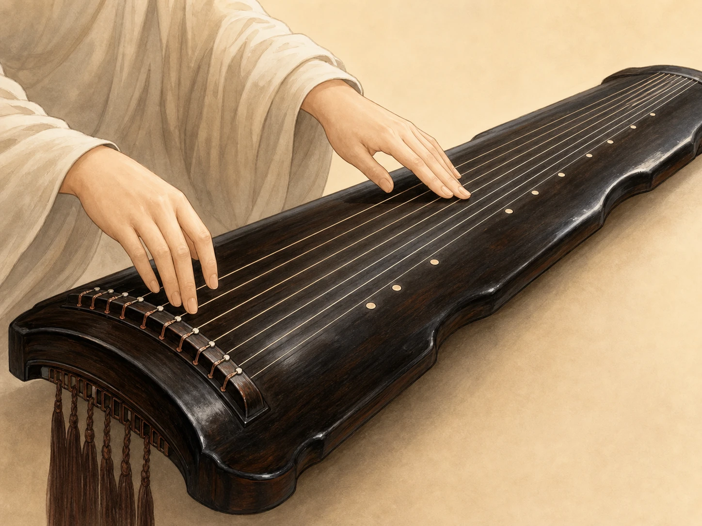
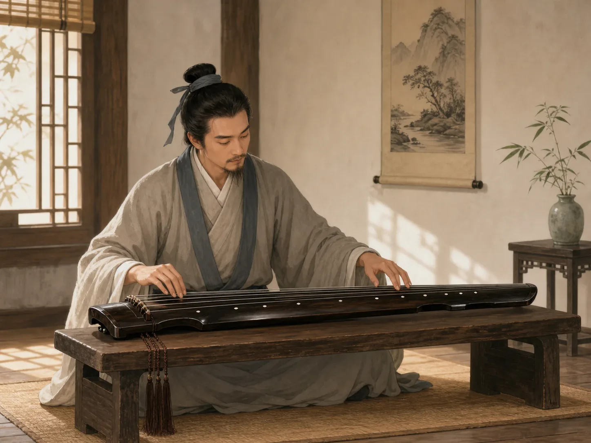
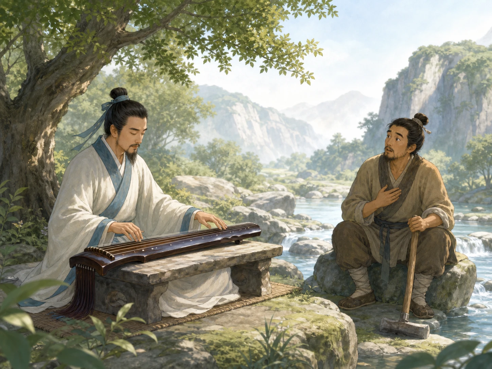

一根弦，为什么有三种声音？
How Can One String Make Three Kinds of Sound?
阅读难度 · 困难Reading level · Hard
Page 1
先认清：这是古琴，不是古筝
First, Meet the Guqin - not the Guzheng

This is a modern illustration, not a photograph of a museum instrument or a substitute for a teacher's demonstration. A guqin usually has seven strings and thirteen studs, but no movable bridge under each string like a guzheng.
想象老师让你试弹一张练习用的古琴 - 不是玻璃柜里的文物。你用右手拨一根没有被左手碰到的弦，声音厚而清楚。接着，左手把弦按在光滑的琴面上，右手再拨；手指滑动时，音高也跟着改变。最后，左手只在一个小圆点附近轻轻碰弦，右手一拨，声音忽然变得轻亮，像一滴水闪了一下。同一根弦怎么会有三种声音？
先别把它叫成古筝。常见的现代古筝体形更大，通常有二十一根弦，每根弦下面有可以移动的琴码；古琴通常只有七根弦，琴面上没有一排琴码，所以左手可以沿弦滑动。琴面一侧的十三个小圆点叫“徽”，用来帮助琴人找到泛音位置。两种都是中国弹拨弦乐器，却有不同的结构、声音和演奏传统。
Imagine that a teacher lets you try a practice guqin - not an antique inside a museum case. First, you pluck a string without touching it with your left hand. The note sounds full and clear. Next, you press the string against the smooth board, pluck again, and slide your finger. The pitch moves with you. Finally, you barely touch the string near a small round stud. When you pluck, a light, bell-like sound flashes out. How can one string make three kinds of sound?
First, do not call this instrument a guzheng. A common modern guzheng is larger, usually has twenty-one strings, and supports each string with a movable bridge. A guqin usually has seven strings and no row of bridges, so the left hand can slide freely along the surface. Thirteen small studs, called hui, help players locate harmonics. Both are Chinese plucked string instruments, but their structures, sounds, and musical traditions are different.
Page 2
散、按、泛：手指在告诉弦怎样振动
Open, Stopped, and Harmonic: Three Ways to Set a String Moving
第一种叫“散音”：右手直接拨空弦，整段弦一起振动。第二种叫“按音”：左手把弦压在琴面上，改变能够振动的长度；按住后再滑、摇或揉，音高和音色就继续变化。第三种叫“泛音”：左手在特定位置轻触而不压实，拨弦后立刻放开，弦会以特别的分段方式振动，发出清亮的声音。十三个徽并不是钢琴键，也不表示十三个固定音；它们像路标，帮助琴人寻找比例准确的位置。
古琴谱也很像一张手指路线图。常见的“减字谱”把汉字的一部分拆开、缩短，再组合成符号，告诉琴人用哪根弦、左手在什么位置、右手怎样拨，有时还提示吟、滑等动作。可是传统减字谱通常不像现代五线谱那样把每个音的时值和速度写得很完整。琴人需要向老师学习，参考不同传本，再把纸上的指法“打”成可以演奏的音乐。同一首古曲因此可能有不同但有根据的演奏版本；这不是随便弹，而是乐谱、师承和判断一起工作。
The first sound is san, an open-string note. The right hand plucks while the whole length of the string vibrates. The second is an, a stopped note. A left-hand finger presses the string to the board, changing the length that can vibrate. Sliding or rocking that finger can continue to change the pitch and color. The third is fan, a harmonic. The left hand touches a special point lightly instead of pressing down, then releases after the right hand plucks. The string vibrates in sections and produces a clear, floating tone. The thirteen hui are not piano keys or thirteen fixed notes. They are more like signposts for finding exact proportions along a string.
Guqin notation also works a little like a map for the fingers. In the common system called jianzipu, or reduced-character notation, pieces of Chinese characters are shortened and combined into symbols. A symbol can tell the player which string to use, where the left hand goes, how the right hand plucks, and sometimes how to slide or ornament a sound. Traditional jianzipu, however, usually does not record every note length and speed as completely as a modern staff score. Players learn from teachers, compare old versions, and turn written finger instructions into sounding music through a process called dapu. That is why one old piece can have several different but carefully reasoned performances. It is not random; notation, teaching, and musical judgment work together.
Page 3
“很古老”不等于“三千年完全没变”
“Very Old” Does Not Mean “Unchanged for 3,000 Years”

This is a modern imagined study, not a portrait of a historical player. The instrument and room use later familiar styles and cannot represent every period or every guqin musician.
古书和考古都说明，中国很早就有称作“琴”或接近琴类的弦乐器。不过，早期出土琴有不同弦数和结构，不能把每一件都直接当作今天古琴的缩小版。伏羲、神农造琴，以及文王、武王加弦的说法，是后人用圣王解释古琴来历的传说，不是可以确定的发明记录。研究者根据实物、图像和文献判断，今天熟悉的七弦、无品、十三徽形制经过长期发展，到汉末以后逐渐出现，到唐代七弦已基本固定。
一张琴也不是从古代原封不动地穿越到今天。制琴人要选择木材，挖出音腔，合上面板与底板，再用灰胎和漆处理表面；制弦人过去把许多细蚕丝合成粗细不同的弦。现代琴人也会使用更耐用、声音较亮的金属芯尼龙缠弦，有些人仍喜欢丝弦。博物馆鉴定一张“唐琴”，会一起看木材、形制、漆层、断纹、内部款识和流传记录，不能只看琴背刻了什么字。以故宫的“大圣遗音”为例，专家把它鉴定为唐琴，但它的岳山和龙龈有后换痕迹，也经过近代修理。老琴的铭文和零件可能来自不同年代，正是它漫长生命的一部分。
Early books and archaeology show that instruments called qin, or related zithers, existed very long ago in China. Yet excavated early instruments have different numbers of strings and different structures. We should not treat every one as a small copy of today's guqin. Stories say that Fuxi or Shennong invented the qin, or that Kings Wen and Wu added strings. These are traditions that connect the instrument to legendary sage-kings, not confirmed invention records. From objects, images, and texts, researchers think the familiar unfretted form with seven strings and thirteen studs developed over a long time. It began to emerge around the end of the Han period, and seven strings were basically standard by the Tang.
Nor does an old qin travel through time without change. Makers select wood, hollow out a sound chamber, join a top and bottom board, and build up a lacquered surface. String makers traditionally twisted many fine silk threads into strings of different thicknesses. Today, many players use brighter, more durable nylon-wrapped metal strings, while others still choose silk. To identify a “Tang qin,” museum specialists compare wood, shape, lacquer, crack patterns, inscriptions inside the instrument, and ownership history. An inscription on the back is not enough by itself. The Palace Museum's Dasheng Yiyin, for example, is identified as a Tang instrument, but two string-supporting parts were replaced and the qin received modern repairs. An old instrument can carry words and parts from more than one period. Those changes are part of its long life.
Page 4
谁能弹琴？不只是书房里的男文人
Who Played? Not Only Male Scholars in Studies
古琴和文人身份关系很深。两千多年前成书的《礼记》说“士无故不撤琴瑟”，表达的是有身份、有教养的“士”应当常让琴瑟在身边的理想。后来的“琴棋书画”也把琴列入文人应该修习的艺术。但“应该会”不等于每位文人真的都会，更不等于古代人人每天在书房弹琴。琴也用于礼仪、朋友相聚、琴歌和公开演奏，不同时代的用途并不相同。
如果画面里永远只有一位男士独坐，我们还会漏掉很多人。史料中有女性琴人，也有以琴见长的僧人和职业艺人；制琴、修琴和制弦的工匠更是这项音乐能够延续的必要伙伴。今天，孩子和成年人、女性和男性、专业演奏者和普通爱好者都在学琴，也有人把古琴带进音乐厅、学校、录音室或与其他乐器合作。2003年，古琴艺术被联合国教科文组织宣布为“人类口头和非物质遗产代表作”，2008年列入人类非物质文化遗产代表作名录。被列入名录不等于把它锁在过去，而是提醒人们支持传授、制作、演奏和继续学习。
The guqin became closely tied to the identity of educated scholars. The ancient Book of Rites says that a shi - a person of learning and social standing - should not set aside the qin and se without reason. This describes an ideal: a cultivated person ought to keep music close. Later, the guqin joined calligraphy, painting, and a strategy game as arts a scholar was expected to study. But “should know” does not mean every scholar really played, and it certainly does not mean everyone in ancient China practiced in a private study each day. The qin also appeared in rituals, friendly gatherings, songs, and public performance. Its uses changed across periods.
If every picture shows one man playing alone, we miss many participants. Historical records include women guqin players, Buddhist monks known for playing, and professional musicians. Instrument makers, repairers, and string makers were essential partners, too. Today, children and adults, women and men, concert artists and hobbyists all learn. The guqin can be heard in concert halls, schools, and recording studios, sometimes together with other instruments. UNESCO proclaimed guqin music a Masterpiece of the Oral and Intangible Heritage of Humanity in 2003 and placed it on the Representative List in 2008. Listing it does not mean locking it in the past. It means supporting teaching, making, performing, and continued learning.
Page 5
伯牙弹的是我们今天听到的《流水》吗？
Did Boya Play the “Flowing Water” We Hear Today?

This is a modern imagined scene based on later tradition, not a historical portrait of Boya and Ziqi. Its seven-string qin, clothing, landscape, and woodcutter figure are not eyewitness evidence.
伯牙和子期的故事正好考验我们怎样听古老的声音。《列子》和《吕氏春秋》等后世传下来的古书说，伯牙弹琴时心意在高山或流水，子期听出了他的意思；《吕氏春秋》的版本还写到子期死后，伯牙破琴绝弦，不再弹奏。后来戏曲、小说和地方传说又增加了樵夫、江边相遇、摔琴等具体场景。这个传统让“知音”成了真正理解自己的人，但我们不能把现代插画里的服装、地点和表情当成历史照片。
故事里的“志在高山、志在流水”，也不等于伯牙演奏了今天录音里的同一份曲谱。现存《高山》和《流水》的早期琴谱见于明代《神奇秘谱》，距离故事所设想的年代已经很远。今天常听到的《流水》又常依据十九世纪琴家张孔山传下的谱本。琴曲在一代代记谱、传授和打谱中继续生长，因此“伯牙知音的文本传统”和“可以实际演奏的《高山》《流水》传谱史”应当分开，再看看它们怎样彼此影响。
The story of Boya and Ziqi tests how carefully we listen to the past. Ancient books handed down in later copies, including the Liezi and Lüshi Chunqiu, say that Boya played with mountains or flowing water in mind, and Ziqi understood his meaning. The Lüshi Chunqiu version also says that after Ziqi died, Boya broke his instrument's strings and stopped playing. Plays, stories, and local traditions later added such details as a woodcutter, a meeting beside a river, and a smashed qin. The tradition gave Chinese the word zhiyin for a person who truly understands you. But the clothes, place, and expressions in a modern illustration are not a historical photograph.
“Thinking of mountains and flowing water” does not mean Boya performed the exact score heard in a recording today. Early surviving notation for the separate pieces High Mountains and Flowing Water appears in the Ming-dynasty Shenqi Mipu, already far removed from the time in which the story is set. A version of Flowing Water often played today comes through the nineteenth-century master Zhang Kongshan. Guqin pieces kept growing as players copied, taught, interpreted, and reconstructed scores. The textual tradition about Boya's understanding friend and the performance history of High Mountains and Flowing Water are connected - but they are not the same evidence.
听见一根弦，也听见许多双手
Hear One String - and Many Hands
再拨一次练习琴的弦：散音让整根弦说话，按音让手指改变它，泛音让弦分段振动。可别去试摸博物馆里的老琴 - 保存实物也是让音乐继续被研究的一种方式。
古琴的声音看似来自七根弦，其实还来自制琴人与制弦人、老师与学生、古谱与新解释，以及文人、女性、僧人、艺人和现代学习者。真正的“古老”不是从来不变，而是变化以后，仍有人愿意仔细听、认真学，也诚实地问证据来自哪里。
Pluck a practice string once more: an open note lets its full length speak, a stopped note lets the finger reshape it, and a harmonic divides its vibration. Just do not test this on an antique in a museum. Protecting an object is one way to keep its music available for study.
The guqin may sound as if it comes from seven strings, but many hands are behind it: instrument and string makers, teachers and students, old notation and new interpretation, scholars, women, monks, professional musicians, and learners today. Being truly old does not mean never changing. It means that after change, people still listen carefully, learn seriously, and ask honestly where the evidence comes from.